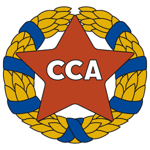
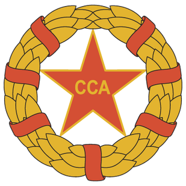
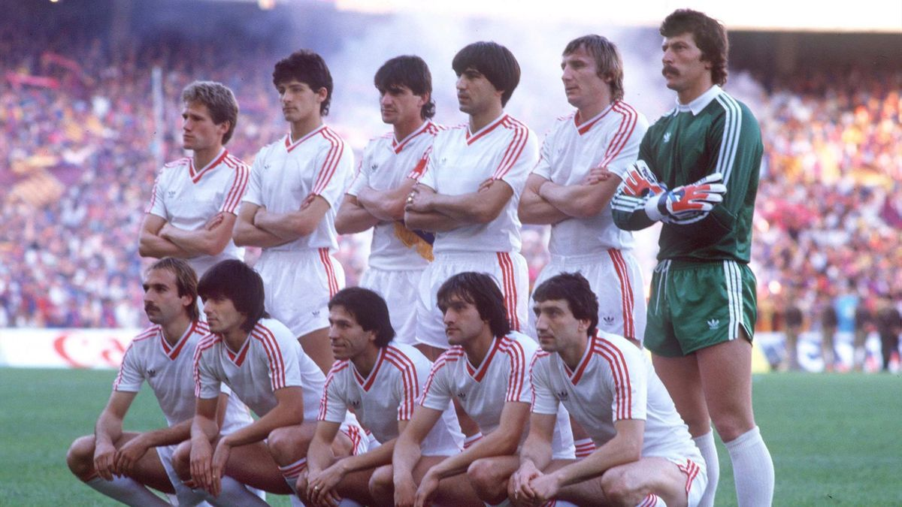
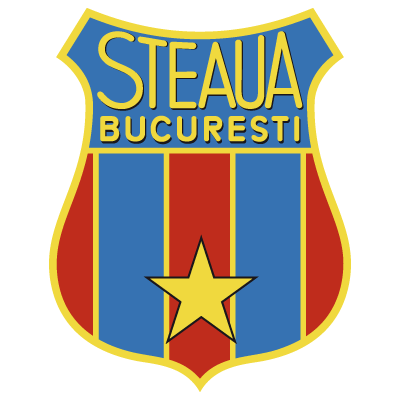
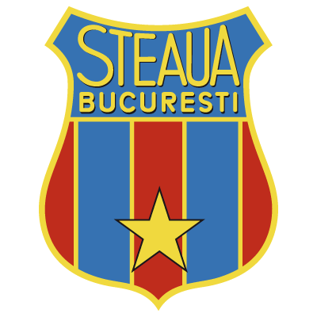

How it all started
ASA Bucharest (Sports Association of the Bucharest Army ) was established on June 7, 1947 at the initiative of several officers of the House royal of Romania. The establishment took place following a decree signed by the general Mihail Lascăr high commander of the Romanian Royal Army. It was formed as a sporting society with seven original wards, incl football, coached by Coloman Braun Bogdan. ASA was renamed as CSCA (Central Army Sports Club) in 1948 and CCA (Central House of the Army) in 1950.In 1949, CSCA won its first trophy, Romanian Cup, defeating CSU Cluj 2–1 in the final. Under the name of CCA, the club managed to win three titles in a row in 1951, 1952 and 1953, along with his first Championship-Cup double in 1951. In the 1950s, the so-called "CCA gold team" became national famous.[10] In 1956, the Romanian national team (composed exclusively of CCA players) played Yugoslavia in Belgrade and won with 1-0. In the same year, CCA, coached by Ilie Savu, became the first Romanian team that participated in a tournament in England, where a achieved outstanding results against Luton Town, Arsenal, Sheffield Wednesday and Wolverhampton Wanderers.
 At the end of 1961, CCA changed its name again to CSA Steaua Bucharest (Steaua Army Sports Club). The club's new name was adopted due to the presence of a red star, a symbol of most army clubs in Eastern Europe. A poor period of almost two decades followed in which the club managed only three championships (1967–68, 1975–76, 1977–78). Instead, the team won nine cups, earning them the nickname "Cup Specialists". Also during this period, on April 9, 1974, Steaua's ground, the Ghencea Stadium,
was inaugurated with a friendly match against OFK .

The team's greatest success was winning the European Champions Cup, the current Champions League, in 1986 against the great Barcelona and the European SuperCup in 1987 against Dynamo Kyiv 
Under the last two logo's Steaua Bucharest became de most successful romanian football team with the following:
 

- 21 times Championships of Romania
- 20 times winners of the Romanian football Cup
- 4 times winners of the Romanian Super Cup
- 1 time winners of the European Champions Cup
- 1 time winners of the European SuperCup